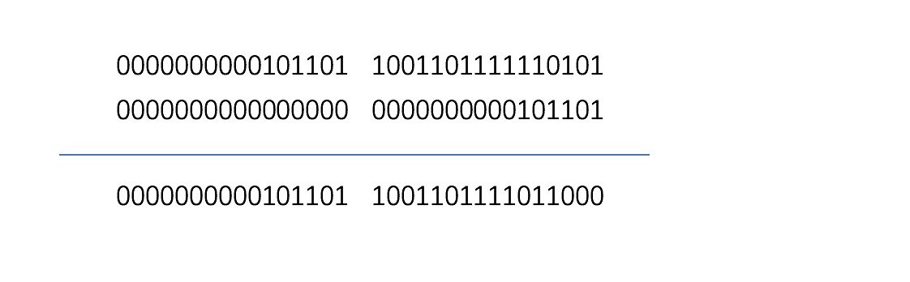
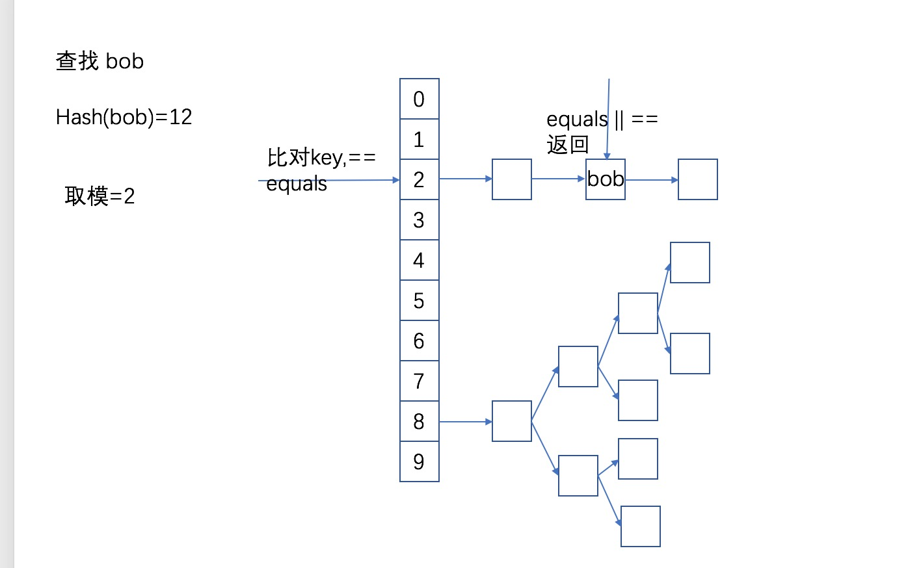
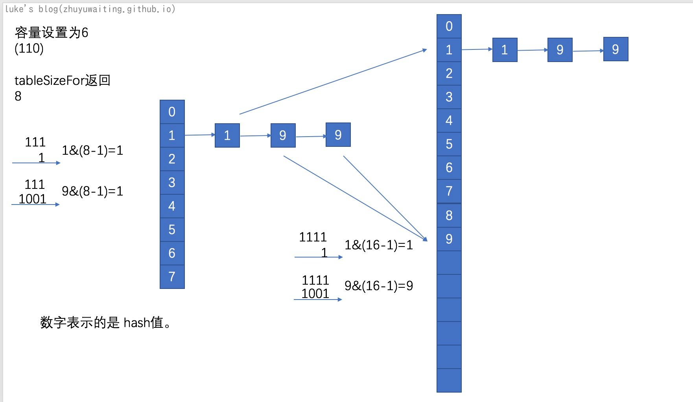

前言：
实话说，HashMap作为集合中比较经典的一个类，其在面试中经常会被问到：例如
- 说说HashMap的原理(o(╥﹏╥)o真nm笼统)
- HashMap是怎么扩容的呢？
- 传统HashMap(jdk1.7)的hashMap有什么缺点，如何对其进行优化呢(红黑树)？
- 那么又了解在实际情况下会进化到红黑树的比例吗？
- HashMap是线程安全的吗？不是应该用啥呢….巴拉巴拉 能接一串问题。
瞬间就有了继续下去的动力了，💰💰💰💰
为啥需要HashMap呢？
前面分析了线性表的两种典型结构，ArrayList随机访问线性表，LinkedList顺序访问线性表。但是其都一个缺陷，就是如果需要获取一个对象（比如找叫小波的给我两块钱），那么我就需要遍历这个线性表，先找到这个张三，然后在从他兜里偷两块钱，其时间复杂度无疑是O(n)的
这种情况就需要哈希表出马了，所谓的哈希表，就是k-v结构，例子中k就是小波的名字，v就是小波，那么我找小波就可以通过这种kv结构在O(1)d时间下获取到小波了。性能无疑是非常优越的。
什么是哈希表？
所谓的哈希表，就是将一个对象，通过一个函数计算出来了这个对象应该在数组中元素的位置那么我们就可以通过数组在O(1)时间复杂度内获取这个对象。而这个函数就是所谓的哈希函数，这个数组和哈希函数整体构成了哈希表的基础组成。

哈希冲突
什么是hash冲突呢?
哈希函数是哈希表中的一个重要组成，但是字符串是无穷的，很难说有一个hash函数生成的key与一个对象能够一对一关联上，也就是说，可能出现两个不同的对象生成同一个key的情况，这就是hash冲突。有了问题就要解决问题，那么如何解决hash冲突呢：
- 开放地址法。冲突了就继续下一个
- 在hash，冲突了就运行二次hash
- 拉链法，冲突了就在数组的那个位置在拉个链表出来。

hashMap源码分析
说完哈希表这种数据结构，以及hash冲突的解决办法。我们来看看HashMap的实现。
数据结构是一切的基础
1 | // 数组 |
从上述源码中，我们可以发现，hashMap底层是有数组来做基础支撑，与我们前面说的哈希表一致。hashMap中含有下一个节点的指针，采用的是拉链法解决冲突。基础结构如下图左侧所示：

左侧便是jdk1.7的结构，有图是jdk1.8进行的优化，增加了红黑树的结构。
增删改查基础操作
查询 get()
1 | static final int hash(Object key) { |
hash()哈数

hash函数的获取方式: 通过key获取key的hashCode。高16位保持不变，低16位于高16位异或的结果作为低16位。
index获取
index是又hash()值与数组大小n-1做 & and运算的结果。为什么这样操作。 首先，这里给出一个信息 HashMap的大小都是2^n次方（稍后变能看到）。那么n-1的二进制变全部都是1， n-1 做and运算，就想当与hash()对size取模。
get

增加/修改 put()
View Code
1 | // 设置k-v |
说明：
通过上面的代码，我们了解到
- hashMap的put如果存在，则会替换旧值
- hashMap阈值则会扩容处理
- 如果链表长度大于阈值，则会进行链表转红黑树处理。
那么：
- hashMap链表转红黑树的阈值是多少呢
- hashMap扩容是怎么进行扩容的呢。
- hashMap扩缩容阈值是怎么确定的呢
1.hashMap链表转红黑树阈值：
1 | /** |
当链表结构长度超过8 的时候会转化为红黑树，当冲突节点长度小于6的时候，会退化为链表。
3.hashMap扩容是怎么进行扩容的呢。
来看看扩容的代码:
View Code
1 | //构造函数 |
可以发现：
- hashMap中数组最大容量是 1>>30
- hashMap的table扩容是左移一位，扩容为原来的两倍容量
- 扩容后的处理，扩容后元素需要迁移，由于hashMap的处理中，扩容为原来的两倍，初始化的时候也是2的n次方这种，所以扩容后节点的hash定位index的时候只有 原位置，和j+oldCap这两种。
设置容量的初始化: 巧妙的构思将 n之后的位数全部设置为1，然后+1取2的n次方的整数。
1 | static final int tableSizeFor(int cap) { |

为什么hashMap内部的table要设置为2的n次方倍呢？
- hash映射到数组中需要以取模的方式来进行
- 取模的操作可以映射到 (n-1) & k 上，
- 如果n为2的n次方，那么n-1二进制上全部为1，那么与k取and运算的时候，k<=n-1则为k,k>n的时候 高位被舍弃
- 2的n次方的时候，扩容后舍弃的高位还原，那么元素移动的时候就可以轻易计算出来移动后的位置。
3.hashMap扩缩容阈值是怎么确定的呢
从上述的扩容操作中，我们可以知道，扩容阈值始终为容量的 0.75 也就是设置的扩容因子 loadFactory
删除 remove()
View Code
1 | public V remove(Object key) { |
说明：
删除的操作比较简单，找到节点之后直接移除掉节点就可以了。
使用hashmap需要注意
- hashMap是非线程安全的
- 扩容的操作会遍历所有的元素，并且当元素>0.75cap的时候就会进行扩容，所以在使用的时候，如果能预估容量，最好可以直接设定hashMap的容量，避免扩容处理
- equals重写，hashCode一定要进行重写，否则可能导致equals是相同的但是hashCode没有重写导致不同 。因为equals相同，所以我们认为两个对象是一个。但是hashCode不同，会导致其路由到不同的index上，所以如果通过a是找不到我们认为相同的b的。
总结：
本文首先介绍了哈希表的相关知识，然后通过hashMap的源码，了解了hashMap内部结构和扩容等相关知识。通过上述的分析，我们对于hashMap有了更深刻的理解。但是依旧有很多地方没有涉及，例如红黑树内部的操作，序列化等等操作。